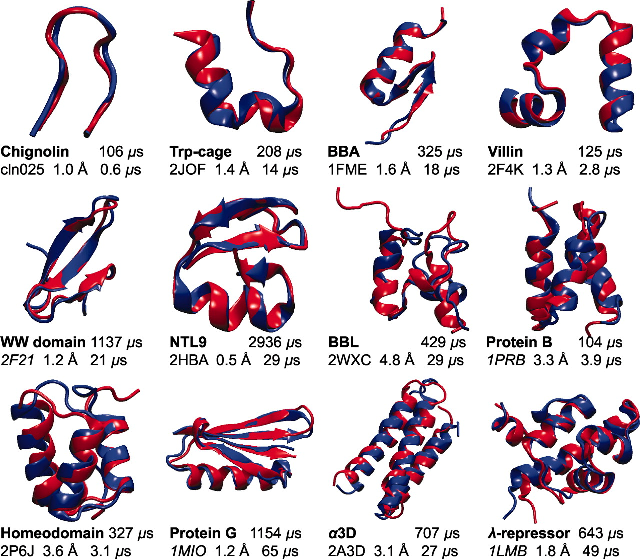

Los modelos tridimensionales de la mecánica molecular son conceptualmente similares al modelo HP, pero en espacios tridimensionales, normalmente considerando al solvente de forma explícita o implícita y los enlaces entre átomos (o grupos de átomos) como muelles gobernados por la ley de Hooke. En estos modelos, la energía conformacional de una molécula se calcula con un campo de fuerzas y funciones que incluyen múltiples términos:
Una simulación de dinámica molecular (MD) es un experimento que evalúa la fuerza resultante sobre cada átomo de una molécula a lo largo de un tiempo finito. Durante el tiempo simulado la molécula va cambiando de conformación en intervalos consecutivos muy cortos, del orden de picosegundos (Leach, 2001). Actualmente se consiguen simular periodos de hasta milisegundos (Shaw et al., 2010). Éstos son experimentos muy costosos en cuanto a recursos de cómputo, pero permiten estudiar procesos poco accesibles experimentalmente, como en el trabajo de Golosov et al. (2010), donde se explora el mecanismo de translocación de la RNA polimerasa. Este problema se presta muy bien a la computación distribuida, por su elevado coste, como en el experimento Folding@Home o el juego Foldit.
Este tipo de simulaciones van siendo cada vez más realistas, por ejemplo por medio de mejores modelos de solventes (Lee et al., 2013), y se ha demostrado que predicen de manera reproducible el plegamiento de algunas proteínas de pequeño tamaño (Lindorff-Larsen et al., 2011). Sin embargo sigue siendo complicado aplicar MD a moléculas y complejos de gran tamaño.
|

|